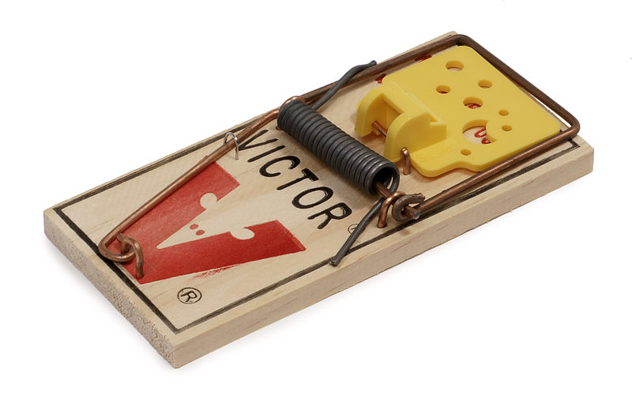

2022-07-28 08:00

Republicans, Republicans, and more Republicans have joined forces to create a new political party — for Democrats.
This new party, calling itself Forward, will initially be chaired by Andrew Yang, who in 2020 posed as a Democrat for the sake of the primary, and Christine Todd Whitman, a former Republican governor of New Jersey and EPA Secretary under George W. Bush.
Forward joins forces with two previous GOP attempts to splinter the centrist wing of the Democratic Party: Renew America, launched in 2021 by a group of Reagan/Bush Republicans; and Serve America, another Republican group founded by Morgan Stanley lawyer Eric Grossman with [George W.] Bush administration figures.
Forward is an idea Christine Todd Whitman has been pushing for at least a year, usually by painting Trump’s destruction of the Republican Party like Jim Jones’ destruction of his own cult.
But rather than simply throwing “rational Republicans” a lifeline, Whitman’s other goal is to hollow out the Democratic Party by peeling away as many centrists as possible from the Democratic Party’s supposed “radical left.” When NPR host Steve Inskeep asked Whitman what she wanted from Democrats, she answered: “We want Democrats, when faced with a radical left candidate from the Democrat Party, to vote for a centrist Republican.”
Andrew Yang might have run as a Democrat in 2020 but earlier this month he showed up at a far-right event called Freedom Fest 2022 to rub elbows with both American and European fascists and to introduce them to his new project with a talk, “Forward — Notes on the Future of our Democracy.”
If you were paying any attention to the Republicans’ CPAC (Conservative Political Action) Conference in Budapest last May, many of the same elements attended Freedom Fest 2022. But instead of painting themselves as “rational Republicans” as they’re now doing with Forward, at CPAC they were fawning all over Viktor Orban and his Fidesz party — precisely because of its illiberal policies.
Fidesz, which is now a hard right Christian nationalist party, originally started out as a center-right coalition offering a “big tent” for both right-leaning liberals and far right nationalists. Over time, Fidesz has become increasingly repressive, antisemitic, and fascistic — so much so that last week, after Viktor Orban delivered a speech warning of the dangers of “race mixing,” one of his long-time advisors resigned from Fidesz, slamming Orban’s remarks as “pure Nazi text worthy of (Nazi propagandist) Goebbels.”
Whether the Republican Party’s new Forward movement will be an oasis of sanity for “rational Republicans” or a tasty cheese trap for Democrats who have to compete in Red districts, Forward is likely to suffer the same fate as Fidesz because the people and organizations who created Forward are just as unscrupulous and authoritarian as the orange meanie they created but can’t control.
If Yang and Whitman’s project goes anywhere — and that’s a big if — no doubt a number of fickle Democrats would be tempted to jump ship and join Forward. And good riddance. But if history offers any sort of guide, the Democratic Party would then try to staunch the hemorrhaging by moving even further to the right itself, creating an even more unfriendly climate for progressives.
This is why progressives — presently stuck in the Democratic Party’s mouse trap — will be forced to leave the Democratic Party sooner or later. Because America doesn’t need a second centrist party half as much as it needs one that represents working class people, the poor, and the marginalized.